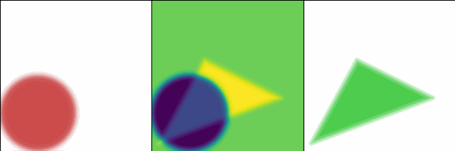

可微渲染实验2：可微光栅化几何参数自动调整
实验背景
从实验 1 中我们已经知道，可微渲染可以优化的对象除了纹理贴图，还有模型的几何信息等。在游戏中，模型几何常用三角网格表示，可优化的对象包括顶点位置、边拓扑关系、UV 和法线，以及可能包含的蒙皮数据。
在游戏模型资产优化任务中，有一类很常见的任务是 LOD 的自动生成。位于相机远处，或在低端机型上显示的模型，游戏程序将会自动选择低精度（LOD 级别高）的模型，以减轻渲染压力。传统的基于几何处理的 LOD 低模自动生成算法（保 UV 或不保 UV）已经比较成熟，但它们所满足的指标往往是固定的，难以动态适配具体的游戏项目和渲染流程。
为此，可微渲染技术应运而出，根据相应的渲染流程，在迭代训练下自动生成匹配的，简化的模型拓扑，并且保持模型 UV。这样生成的低模自然也是理论上最优的。
本实验中，我们将模拟这一过程，用待调参的模型表示 \(M_I\) 自动匹配目标模型表示 \(M_T\)。
由于三角网格的几何参数数量级可达百万甚至更高，而本系列实验的体量很小，所以我们将转而用一种解析的方式表达模型——有向距离场（SDF）。一个解析曲面的 SDF 表示只涉及寥寥几个参数，用运行时在着色器中的计算大大节省了保存模型几何的空间，因此大大压缩了参数量级。不过，一般的游戏资产的一般生产流程不涉及 SDF 建模，所以本实验的流程仅作研究用途，很难直接用于生产环境。
基于 SDF 的几何表示
有向距离场（SDF）的输入是一个空间坐标 \(\mathbf x\)，输出为一个实数 \(\phi(\mathbf x)\)，若其为正数，则其位于模型外部，否则位于模型边缘或内部；\(|\phi(\mathbf x)|\) 为该点距离模型表面的最短距离。例如，位于原点的半径为 \(r\) 的球体的 SDF 就是 \(\phi(\mathbf x) = |\mathbf x| - r\)。对简单的 SDF 加以变换和组合（如布尔操作），就可以表示相当复杂的模型。
可以在Inigo Quilez 的网站中找到许多解析的 SDF，包括二维的和三维的。Shadertoy中的许多例子都与 SDF 魔法有关。
可微的光栅化过程
在本实验中，我们将模型几何用 SDF 表示后，仍然需要将它们光栅化。为了让离散的光栅化过程连续化，从而方便自动微分，我们将判断一个像素是否在三角形内的逻辑修改为基于模型 SDF，并使用 sigmoid 函数
\[ \sigma(x) = \frac{1}{1 + \mathrm e^{-x/\sigma}} \in (0, 1) \tag{*} \]
平滑计算出的有向距离。
具体而言，我们对每个像素计算其到某模型的有向距离 \(d\)，其中 \(d \in (-\infty, +\infty)\) ，若像素在模型内则取负值。随后，计算 \(\sigma(-d)\) ，结果越大，则说明像素越接近模型中心；反之像素越远离模型。对于 \(d\) 在 \(0\) 附近的边缘点，这一计算结果会给出接近 \(\frac{1}{2}\) 的值。
在本实验中，我们每次渲染将只涉及一种模型，因此我们将用线性插值
\[ c = \text{lerp}(c_{\text{model}}, c_{\text{bg}}, \sigma(-d)) \tag{**} \]
决定每个像素点的颜色 \(c\)，其中 \(c_{\text{model}}, c_{\text{bg}}\) 分别为模型的颜色和背景色。由于 sigmoid 函数在 \(x = 0\) 附近平滑且快速上升，因此光栅化结果会在边缘处存在明显的模糊现象。不过，这也帮助了我们完成了抗锯齿的工作。
实验目标
在本次实验中，我们将实现一个基于 SDF 的二维可微光栅化过程，调整一个圆的半径、圆心和颜色，拟合一个给定的三角形，使得两个图形在像素覆盖性和颜色上的均方误差最小。
为简便起见，本实验将在二维几何下进行。
实验过程
编写着色器
我们将实现这些工具函数以实现 SDF 可微光栅化：
float sd_circle(float2 p, float2 center, float r)：输入点p和圆的中心center和半径r，输出p与圆的有向距离 \(d\)。float sd_triangle(float2 p, float2 v1, float2 v2, floatt v3)：输入点p和三角形顶点v1, v2, v3，输出p与三角形的有向距离 \(d\)。
随后，我们需要实现式 (*) 和式 (**)，在片元着色器正确输出像素颜色。对圆渲染而言，参考代码如下：
1 | [Differentiable] |
实现 Python 前端
在 Python 前端中，我们首先渲染一遍三角形，然后对迭代优化圆的参数组合
(circle_color, center, radius)，渲染若干次圆，直到圆充分贴近三角形。
实验结果
在本次实验中，三角形的参数固定如下：
1 | target_vertices = [[0.7, -0.3], [-0.3, 0.2], [-0.9, -0.9]] |
圆的初始参数如下：
1 | circle_color = wrap_float_tensor([0.8, 0.3, 0.3], True) |
训练过程可视化（GIF）如下：

其中，左图为圆的渲染结果，中图为损失函数 \(L = \text{avg}((T - O_i)^2)\)
的梯度可视化结果，右图为三角形的目标渲染结果。可见，circle_color
在经过训练后与目标参数 [0.3, 0.8, 0.3]
极其接近，呈现出绿色而非初始时的红色；几何参数
center, radius
得到优化，使得其几何充分逼近三角形，在理论上实现了目标函数的最小化。
对于生产环境而言，用低模逼近高模的过程也是类似的过程，不过我们的实验相对它就显得小打小闹了。
在下个实验中，我们将一窥可微渲染在优化着色器参数方面的威力，并建立一个完整可用的 3D 可微光栅化渲染器（使用软件光栅化）。